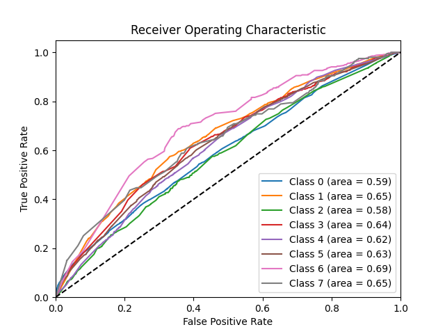

Method
Supervised Learning
For our study on modeling passenger preferences for air travel upgrades, we selected three supervised machine learning techniques: logistic regression, random forest, and neural networks. Each of these models brings unique strengths and suitability for different aspects of our dataset.
Logistic Regression is a fundamental technique in statistical modeling and machine learning, particularly adept at classification tasks. In our study, we adapted logistic regression for multiclass classification to predict whether a passenger would opt for extra baggage or not, a preferred seat or not, and an in-flight meal or not. Logistic regression offers clear interpretability through the statistical significance of variables and their coefficients, allowing us to understand the influence of each predictor on the response variable.
Random Forest is an ensemble learning technique that operates by building multiple decision trees and merging them together to obtain more accurate and stable predictions. It is particularly effective for handling datasets with complex structures and high dimensionality without requiring feature scaling. For multiclass classification issues, random forest can manage categorical variables and their interactions effectively, providing importance scores for each feature, which helps in interpreting the driving factors behind passenger preferences.
Neural Networks, known for its deep learning capabilities, it is well-suited for capturing complex and nonlinear relationships. We utilized neural networks for multiclassification to simultaneously predict preferences across our categories of in-flight meals, seating, and baggage. Despite requiring more computational resources and being less interpretable, neural networks can model intricate patterns in large-scale data, potentially offering higher accuracy and generalization capabilities.
Together, these models encompass a broad spectrum of analytical capabilities, from basic statistical inference to complex pattern recognition. This diversified approach not only enhances the accuracy of our predictions but also enriches our understanding of the data’s underlying dynamics.
Data Preprocessing
Before applying the models, we preprocess the data to ensure it is in a suitable format for analysis. This involves removing columns that will not be of use in the models, encoding categorical variables, creating the necessary multiclass outcome variables, splitting the data into training and testing sets, and addressing class imbalances.
Removing Unneeded Columns
We remove columns that are not used in any models to streamline the data and reduce computational complexity. This step ensures that the models focus on relevant predictors and avoid overfitting due to irrelevant features or features that are not computationally efficient to create dummies for given their lack of importance.
# Python code for Random Forest and Neural Networks
data = data.drop(columns=['route', 'booking_origin', 'departure', 'arrival'])Handling Categorical Variables
Categorical variables such as sales_channel, trip_type, flight_day, and continent are crucial for our analysis. We transform these variables into a format suitable for modeling through one-hot encoding in python and mutating as factors in R.
# Prepare categorical variables with OneHotEncoder
categorical_vars = ['sales_channel', 'trip_type', 'flight_day', 'continent']
ct = ColumnTransformer([('one_hot_encoder', OneHotEncoder(), categorical_vars)], remainder='passthrough')
data_processed = ct.fit_transform(data)Creating the Outcome Combinations
In our study, passengers can choose multiple services (wants_extra_baggage, wants_preferred_seat, and wants_in_flight_meals), and each combination of choices represents a distinct class. This creates a “power set” of outcome variables, forming all possible combinations as unique classes in a multiclass classification framework. We combine these outcome variables into a single multiclass target variable, encoding each unique combination (e.g., “000” for no preferences, “101” for extra baggage and an in-flight meal but not a preferred seat) into a distinct label. This allows the models to predict the exact combination of services a passenger is likely to choose, effectively modeling complex interactions between features.
# Combine the three binary target variables into a single multi-class label
data['combined_label'] = pd.factorize(data['wants_extra_baggage'].astype(str) +
data['wants_in_flight_meals'].astype(str) +
data['wants_preferred_seat'].astype(str))[0]Data Splitting
To ensure the reliability of our models, we split the data into training and testing sets. This division allows us to train the models on one subset and evaluate their performance on another, ensuring that the models generalize well to unseen data. We split at a 80/20 ratio to maintain a balance between training and testing data.
# Python code for Random Forest and Neural Networks
X_train, X_test, y_train, y_test = train_test_split(X, y, test_size=0.2, random_state=123)Addressing Class Imbalances
In our dataset, the classes are imbalanced, with some preferences being more prevalent than others. To address this issue, we used the technique of Synthetic Minority Over-sampling Technique (SMOTE) to balance the classes. This ensures that the models do not become biased towards the majority class and can make accurate predictions for all classes.
Note: The plot above shows the distribution of the target variable wants_extra_baggage. There is a clear imbalance towards cases whereby customers often purchased extra baggage.

Note: The plot above shows the distribution of the target variable wants_in_flight_meals. In this case the data was more evenly distrubuted so we decided to leave the classes as they were.

Note: The plot above shows the distribution of the target variable wants_preferred_seat. There is a clear imbalance towards cases whereby customers often did not purchase preferred seats.
To address the class imbalance, we used the Synthetic Minority Over-sampling Technique (SMOTE) from imblearn, which generates synthetic samples for the minority class to balance the class distribution.
# SMOTE for Random Forest
# Handle class imbalance with SMOTE
smote = SMOTE(random_state=123)
X_train, y_train = smote.fit_resample(X_train, y_train)Model Development and Tuning
This subsection outlines how each model is developed, including the initial setup, parameter tuning, and the specific adjustments made for each type.
Logistic Regression
The logistic regression model is developed using the LogisticRegression module from sklearn on python. Using the multinomial feature we are able to predict wants_extra_baggage, wants_in_flight_meals, and wants_preferred_seat simultaneously.
# Define the LogisticRegression model
model = LogisticRegression(multi_class='multinomial', solver='sag', max_iter=1000)Random Forest
The Random Forest model is implemented using the RandomForestClassifier from the scikit-learn library in Python. For the implementation, we took advantage of its inherent capability to handle multiclass classification problems effectively.
# Define the RandomForest model using the specified parameters
model = RandomForestClassifier(random_state=123, n_estimators=50, max_features=None, min_samples_split=10, min_samples_leaf=5, max_depth = 5)
# Fit the model
model.fit(X_train, y_train)
# Predict on the test data
predictions = model.predict(X_test)Neural Network
The Neural Network model was implemented using the Keras library in Python, which provides a high-level neural networks API that allows for easy and flexible model building.
# Define the Neural Network model using the specified parameters
def create_model(input_dim, activation='relu', layers=2, dropout_rate=0.5, num_classes=8, nodes=128, l2_penalty=0.01):
model = Sequential()
model.add(Dense(nodes, activation=activation, input_dim=input_dim, kernel_regularizer=l2(l2_penalty)))
model.add(Dropout(dropout_rate))
for _ in range(1, layers):
model.add(Dense(nodes, activation=activation, kernel_regularizer=l2(l2_penalty)))
model.add(Dropout(dropout_rate))
model.add(Dense(num_classes, activation='softmax'))
model.compile(optimizer='adam', loss='categorical_crossentropy', metrics=['accuracy'])
return model
# Train the PRUNED best model found with GridSearchCV
best_model_params = {
'activation': 'relu',
'layers': 2,
'dropout_rate': 0.5,
'nodes': 128,
'l2_penalty': 0.01,
}
model = create_model(input_dim=X_train.shape[1], num_classes=y.shape[1], **best_model_params)
early_stopping = EarlyStopping(monitor='val_loss', patience=5, restore_best_weights=True)
# Train the model
model.fit(X_train, y_train, batch_size=32, epochs=20,
verbose=1, validation_data=(X_test, y_test), callbacks=[early_stopping])
# Predict on the test data
y_test_pred_prob = model.predict(X_test)
y_test_pred = np.argmax(y_test_pred_prob, axis=1)
y_test_classes = np.argmax(y_test, axis=1)Parameter Tuning
Parameter tuning and cross-validation are critical components in developing machine learning models, ensuring that the models not only fit the training data well but also generalize effectively to new, unseen data. Here, we’ll detail how these methodologies were applied across the logistic regression, random forest, and neural network models.
GridsearchCV
For all of our models, we used GridSearchCV from sklearn to find the optimal hyperparameters. This method exhaustively searches through a specified parameter grid to find the best combination of hyperparameters for each model. It also doubles as a cross-validation method, allowing us to evaluate the model’s performance on different subsets of the data, ensuring robust and generalized model selection.
For Logistic Regression, we tuned the C parameter and the solver. The C parameter is the inverse of regularization strength, where a smaller value indicates stronger regularization. The solver parameter determines the algorithm used in the optimization problem.
# Grid Search for best parameters
param_grid = {
'C': [0.1, 1, 10],
'solver': ['lbfgs', 'liblinear', 'sag', 'saga']
}
grid_search = GridSearchCV(LogisticRegression(multi_class='multinomial', max_iter=1000), param_grid, cv=5, scoring='accuracy', n_jobs=-1)
grid_search.fit(X_train, y_train)
# Best parameters
best_params = grid_search.best_params_
print("Best parameters from grid search:", best_params)
# Define the LogisticRegression model with best parameters
model = LogisticRegression(multi_class='multinomial', solver=best_params['solver'], C=best_params['C'], max_iter=1000)The GridSearchCV process identified C=0.1 and solver='sag' as the optimal hyperparameters for our logistic regression model after performing 5-fold cross-validation. The choice of C=0.1 indicates that a moderate level of regularization was most effective for this dataset, helping to prevent overfitting without under-penalizing the coefficients. The sag solver, which is efficient for large datasets and supports L2 regularization, was found to be the most suitable optimization algorithm for this multiclass classification problem.
For the Random Forest model, we tuned the max_features, min_samples_split, and min_samples_leaf parameters. The max_features parameter determines the number of features to consider when looking for the best split. The min_samples_split parameter specifies the minimum number of samples required to split an internal node, and the min_samples_leaf parameter defines the minimum number of samples required to be at a leaf node. These parameters are critical for controlling the complexity and the depth of the individual trees within the forest, thereby influencing both the bias and variance of the model.
# Define parameter grid focusing on fewer trees and tree complexity
param_grid = {
'max_features': ['sqrt', 'log2', None], # Features considered for splitting at each leaf
'min_samples_split': [10, 20], # Minimum number of samples required to split an internal node
'min_samples_leaf': [5, 10] # Minimum number of samples required to be at a leaf node
}
# GridSearchCV for parameter tuning
grid_search = GridSearchCV(estimator=model, param_grid=param_grid, cv=10, scoring='accuracy', verbose=2)
grid_search.fit(X_train, y_train)
# Predict probabilities for the test set
probs = grid_search.predict_proba(X_test)The GridSearchCV process identified max_features=None, min_samples_split=10, and min_samples_leaf=5 as the optimal hyperparameters for our Random Forest model after performing 10-fold cross-validation. The choice of max_features=None indicates that all features were considered when looking for the best split, allowing the model to potentially capture more complex patterns in the data. The parameters min_samples_split=10 and min_samples_leaf=5 help control the complexity of the trees by ensuring that splits and leaf nodes have a sufficient number of samples, reducing the risk of overfitting. The n_estimators parameter was manually tested.
For the Neural Network model, we tuned the layers, nodes, and activation, leaving the other parameters set as epochs = 20, batch_size = 32, and dropout_rate = 0.5. The layers parameter determines the number of hidden layers in the network, while the nodes parameter specifies the number of neurons in each layer. The activation parameter defines the activation function used in the hidden layers, affecting how the model learns and represents complex patterns. The epochs and batch_size parameters control the training process, determining how many times the entire dataset is passed through the network and the number of samples per gradient update, respectively. The dropout_rate parameter helps prevent overfitting by randomly dropping neurons during training.
# Wrap the model using KerasClassifier
num_classes = y.shape[1]
model = KerasClassifier(build_fn=create_model, input_dim=X_train.shape[1], verbose=1, activation='relu', layers=1, nodes=64, dropout_rate=0.5, num_classes=8)
# Define parameter grid
param_grid = {
'layers': [1, 2, 3],
'nodes': [32, 64, 128],
'activation': ['relu', 'tanh'],
'epochs': [20],
'batch_size': [32],
'dropout_rate': [0.5]
}
# GridSearchCV
grid_search = GridSearchCV(estimator=model, param_grid=param_grid, cv=5, scoring='accuracy', verbose=2)
grid_search.fit(X_train, y_train)
# Best model from GridSearchCV
best_model = grid_search.best_estimator_
print("Best Parameters:", grid_search.best_params_)
print("Best Model:", best_model)
# Predict on the test set
y_pred_prob = best_model.predict_proba(X_test)The GridSearchCV process identified activation='relu', layers=2, and nodes=128 as the optimal hyperparameters for our Neural Network model after performing 5-fold cross-validation. The chosen configuration of layers=2 and nodes=128 ensures that the network has sufficient capacity to learn complex patterns in the data. The relu activation function was selected for its ability to introduce non-linearity while being computationally efficient. The dropout_rate=0.5 helps mitigate overfitting by preventing the network from becoming too reliant on specific neurons.
Note: Computational resources and time constraints limited the exhaustive search for optimal hyperparameters. In practice, it is essential to balance the trade-off between model performance and computational efficiency.
Overfitting
Overfitting occurs when a model learns the training data too well, capturing noise and irrelevant patterns that do not generalize to unseen data. To address overfitting, we sought to keep the training set accuracy and balanced accuracy within a few percentage points of each other during the model development process. Cross-validation and hyperparameter tuning aided, as well as some manual pruning of n_estimators and reduction in parameters available in the gridsearch.
Model Evaluation
After training and tuning the models, we evaluated their performance on test data using metrics to assess their predictive capabilities. For each model, we calculated the following metrics:
Accuracy: The proportion of correctly classified instances out of the total instances. It provides a general overview of the model’s performance.
Balanced Accuracy: The average of recall obtained on each class. It is useful for large datasets as it considers the class distribution.
Precision: The proportion of true positive predictions out of all positive predictions. It measures the model’s ability to avoid false positives.
Recall: The proportion of true positive predictions out of all actual positives. It measures the model’s ability to capture all positive instances.
The evaluation metrics for each model are summarized below:
| Accuracy | Balanced.Accuracy | Precision | Recall | Model | |
|---|---|---|---|---|---|
| 2 | 0.2916 | 0.1978883 | 0.35 | 0.42 | Random Forest |
| 1 | 0.2153 | 0.2148545 | 0.36 | 0.33 | Neural Network |
| 3 | 0.1913 | 0.2051088 | 0.29 | 0.24 | Logistic Regression |
ROC Curve and AUC
 ### Interpretation of Results
- Interpretation of the model(s)